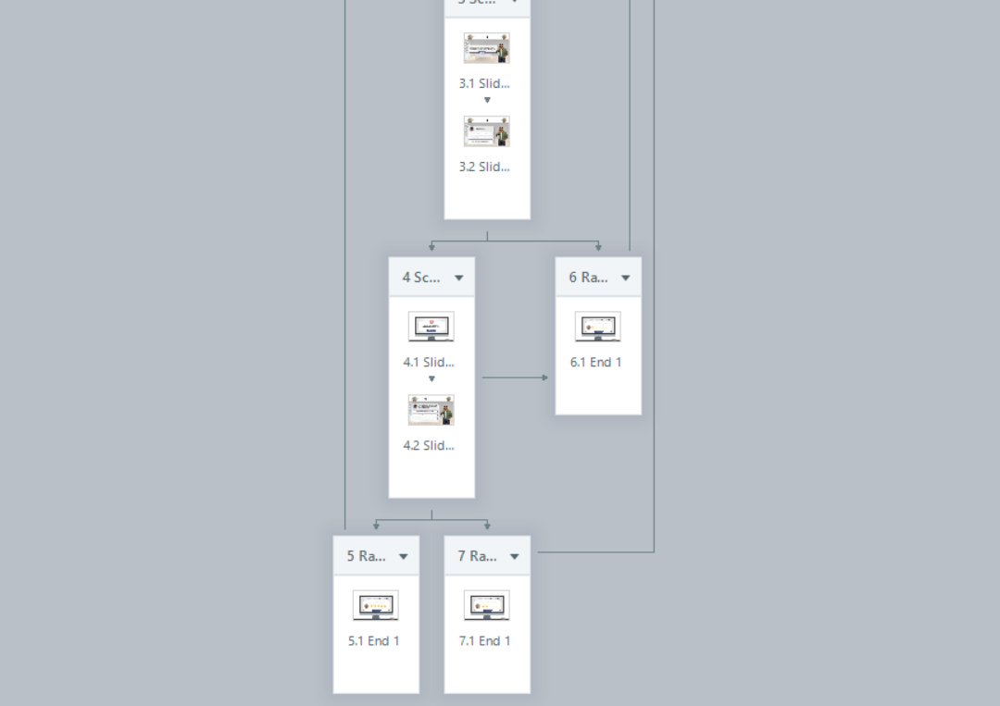
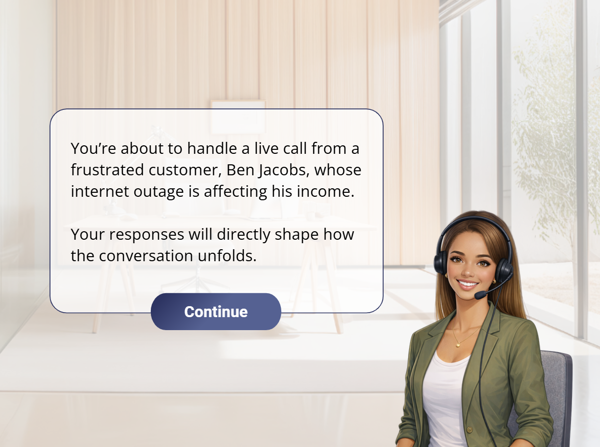
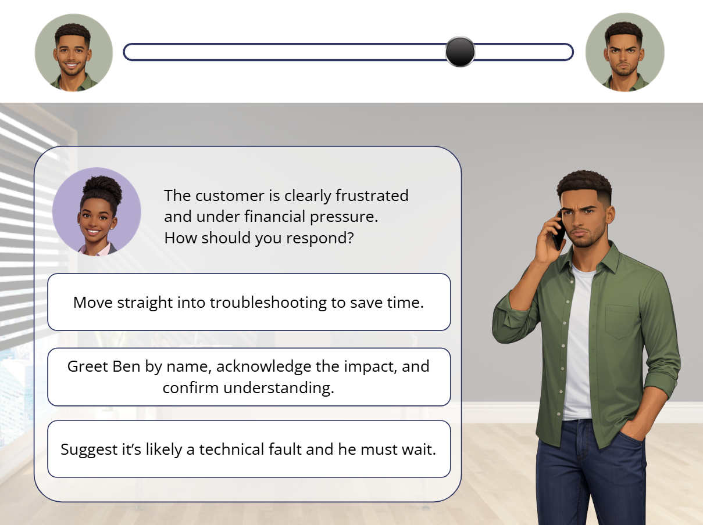
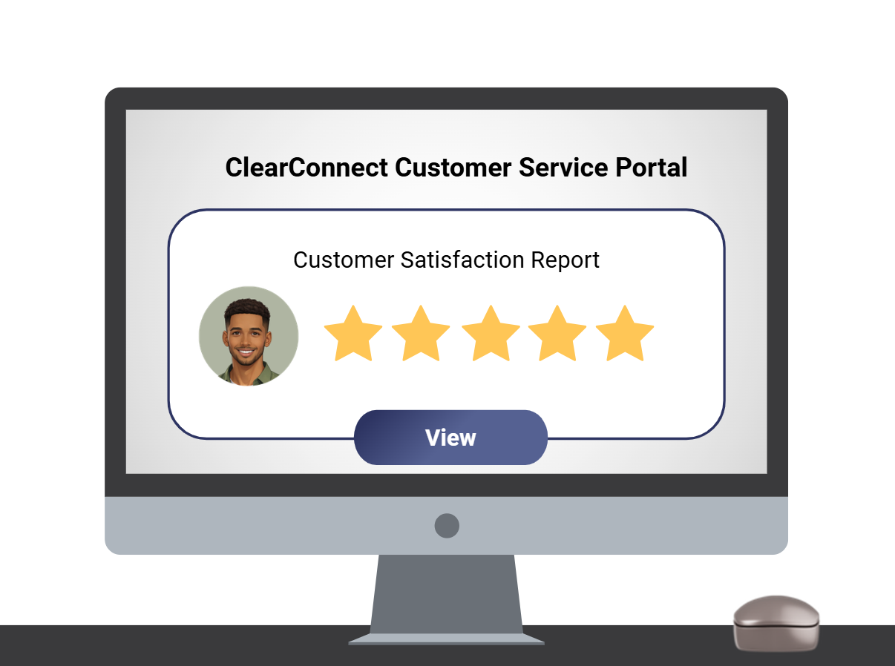

OVERVIEW
About This Project
Restoring the Connection is a concept eLearning module designed as part of a broader Customer Service Programme. It focuses on equipping newly appointed Customer Service Agents with the skills to confidently handle frustrated customers experiencing internet outages — with an emphasis on empathy, de-escalation, and effective communication in high-pressure moments.
CONTEXT
Challenge & Solution
CHALLENGE
The Gap
SMEs identified that new Customer Service Agents struggled to manage frustrated customers during service disruptions. Without practical experience, interactions often escalated — impacting customer satisfaction and resolution outcomes.
SOLUTION
The Approach
A focused, scenario-based learning experience simulating a realistic customer conversation during internet outages. Designed with SME input, it targets a critical moment in the customer journey and builds confidence through immediate, applied feedback.
PROCESS
How It Was Built
Analysis
Identified a critical skills gap through SME consultation.
Design
Developed and storyboarded branching scenarios aligned to real customer interactions.
Development
Built in Articulate Storyline with realistic dialogue and feedback loops.
Implementation
Designed to integrate into a larger onboarding and training journey.
Evaluation
Reviewed with SMEs to ensure alignment with real-world expectations.



VISUAL DESIGN
Fonts, Colours & UI Components
The visual identity of the module was crafted to feel professional and approachable.
COLOUR PALETTE
TYPOGRAPHY
Headings & Buttons
Roboto Bold
Roboto — Bold 700
Body Copy
Open Sans Regular
Open Sans — Regular 400
UI COMPONENTS
NORMAL
HOVER




A collection of key interactions from the module.
RESULTS
What This Demonstrates
This concept module demonstrates how targeted, scenario-based learning can strengthen key moments within a broader Customer Service Programme.
- Addresses a high-impact interaction within the support journey
- Reinforces practical communication and de-escalation skills
- Aligns with programme-level learning objectives
- Demonstrates scalable, modular training design